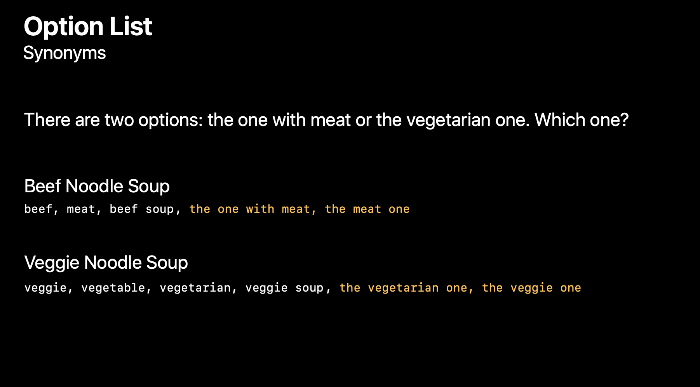

上篇文章通过一步步深入 SiriKit 的细节，讲述了 SiriKit 可以让 app 发挥的领域以及引出了 Siri 捷径的多种类型和各种设计规范。这篇文章将用一个实际的例子一步步地从细节上去设计 app 的 Siri 捷径。
通常情况下，Siri 捷径（Siri Shortcuts）是在 iOS 上把你的 app 的功能在更多地方带到更多用户面前的一个好方法。
来看一下你的 app 的捷径可能会出现的地方以从中获得有帮助的信息。当用户在你的 app 中做了什么事情，你告诉了系统，系统就可以预测用户下次想做那个动作时，自动建议这个捷径。这些捷径可以出现在锁屏和搜索中。
在下图中，这个捷径让你快速开始一个你平时会在一天中的这一刻进行的锻炼。
如果一个用户通过分配一个自定义词组，添加了一个捷径到 Siri，他们可以通过他们的声音在任何时候调起它。在这里，这个捷径让他们预订日常晚餐。
另一个捷径配合 Siri 的应用是不需要操作、不需要看着就可以获取信息。对于你的 HomePod 来说，如果你有一个交通 app 的捷径，你可以说「公共汽车时刻表」，Siri 就会从 app 中读出公共汽车的时刻表信息。
你也可以让你 app 的功能作为一个多步骤捷径的一部分。在这里，这个捷径控制了你晚上回家时的行动安排，在到家时预订汤，开车时播放喜欢的音乐并展示最快的路线。
所以，看看这些例子，我们可以看到捷径可以加速你 app 频繁使用、有用的动作。呈现可以看一眼就获得的信息或者使用你的声音或者作为强大的多步骤捷径的一个部分，你的 app 可以与其他 app 一起配合工作。

这篇文章将会聚焦于如何让捷径利用好 iOS 13 新的 Siri 能力。
目录
选择功能
首先，来看看如何优选 app 的功能以利用好 Siri 捷径。为了实现它，我们以一个名字为「SoupChef」的 app 为例，它可以让你预订各种各样的汤品，你可以选择自取或者送货上门。来看下创造一个 SoupChef 的捷径的设计过程。

先列出 app 能做到的所有事情。当做完这个时，开始想想一个用户可能会重复用声音去做的事情。在 SoupChef 中，你可能会像浏览汤的菜单、定一个汤、检查订单状态或者查看过去的订单。
让我们一个个来看下这些功能。
浏览菜单一个需要许多结构信息且不能很好地翻译成声音的视觉活动。它需要滚动、点击、导航。随着一次次调用，它提供的信息可能不会经常改变。它更像是一个结束，而不是一个有价值的动作。所这个功能可能不适合作为一个捷径。
检查用户状态可能是用过想通过声音触发的功能，从 Siri 中获得一个快速的信息总结。但是它也是只在用户预定完后的很少的时间才能够用得到。所以，这个可能只在送餐时间很长时时或者有多个阶段时，才合适让用户转化其为一个捷径。
查看过去的订单也是一个可以考虑的功能，但是对于我来说，我并不会经常去查看。所以也不适合作为一个捷径。
预定汤品是一个非常有价值的活动。实际上，也是你的 app 中最重要的活动。如果一个用户有一个最喜欢的汤品，你可以想象得到他会经常订购它。所以，我们可以把它作为捷径的最佳候选人。
总结一下，一个可以好好利用的解决应该是有价值的或者说可重复的，它可以不依赖视觉和点击只通过声音就能完成，它可以在许多场景中被调起，因此捷径可以不只是在很短的窗口时间内才会被用到。
发现捷径
现在，我们已经知道了我们想要用户通过捷径能够重新订购汤品，我们进一步来看看如何让这个捷径在你的 app 中可被发现。
我们提供了一个标准的「添加到 Siri」按钮，这让用户容易看到 app 中哪个功能可以被转化成为一个 Siri 捷径。
但注意使用时仔细思考一下，不要像下图这样，把添加到 Siri 按钮放到你的主菜单的每一个条目上。即使按钮本身再漂亮，像这样重复使用也很难看，而且在这里相关性也不足，用户不太可能在第一个开始的地方就尝试下订单，并且这些按钮挡住了路，有些条目可能是用户之前根本没订购过的，目前建议他们重新订购毫无意义。
解决方案是寻找你可以把它放置在一个聚焦一些的 UI 的地方的机会，在那里你会得到一个清晰的信号，用户可能想要重复做些什么事情。例如，在用户订购完什么东西之后展示一个添加到 Siri 按钮可能会更好。这里的逻辑是，如果一个用户发现之前订购的汤品很不错，那他就更可能想要再次订购。而且在这里，你也没有打断用户任何想要做的事，因为它们已经订购完成，所以这是一个好机会。
为了让添加到 Siri 按钮更适合你的 app 的视觉外观，你可以自定义按钮的圆角半径。你可以基于用户的浅色模式或深色模式设置自动让按钮的外观变化。

如果上面说的这些变种还是不能满足你的要求，按钮的样式始终不适合你的 app，你可以自己创造一个，但你应该重复添加到 Siri 按钮的所有功能。标准的添加到 Siri 按钮在配置好后会展示用户设置的捷径短语。这是一个提醒用户他们可以说什么来运行捷径的好方法。
点击按钮会显示一个标准的模态窗口，它允许用户编辑或者删除捷径。
如果你想在你的 app 中有一个集中的位置列出所有的你的捷径，那就可能因为太多而不能在每行都显示添加到 Siri 按钮，所以解决方案是使用标准的 UIKit 元素就好。只要确保当一个用户设置了一个捷径后，像添加到 Siri 一样，你应该展示用户为捷径设置的那个短语。点击按钮也会弹出一个模态窗口，同样地可以编辑或者删除捷径。
假如用户第一次设置捷径，当用户点击添加到 Siri 按钮后，他们会看到添加到 Siri 模态窗口，在这里用户可以选择哪个短语用来触发捷径。在 iOS 13 中，你的 app 可以预置一个你自己选择的捷径。如果你提供了短语参考，大多数用户将可能会直接用那个，所以确保你提供了一个好的默认短语。在上面的例子中，「预定汤品」是一个好的、简短的、可以记住的短语，用户可能想要由衷地用作捷径的短语。
来看另一个例子，「检查公共汽车时刻表」。这看起来像是一个明智的短语，考虑到它相对比较短，这里有充足的机会用户可能会忘记某个单词或者换掉某个单词，他们可能会说「查看公共汽车时刻表」或者是「35 路公共汽车时刻表」。虽然 Siri 可以尽可能地把这些与短语匹配，但用户仍可能在想到更长的短语时有更多的创意。所以，这可能不是一个最好的建议的短语。
解决方案是，让它足够简短，只需要三两个词语，尝试把它限制到一个合适的名词内或者是一个动词、一个对象。这会减少用户打乱单词顺序或者使用不同的介词的机会。
一个用户想要设置一个捷径用来订购西红柿汤，但是如果用户想要捷径每次做的事都不太一样该怎么办，比如订购一个不同的汤品。在 iOS 13 中，用户可以点击执行命令下的具体动作并且通过点击每一个选项来自定义多少信息被预置到捷径中。
用户可以选择让某些选项置空，比如汤的类型。当用户这样做的时候，Siri 会向代表 app 向用户询问缺失的信息。
现在，理想情况下一个捷径会有比较少的交互。毕竟，它应该为用户经常要做的事情提速。所以当你呈现添加到 Siri 模态窗口时，内置的动作应该包括尽可能多的信息，以让运行捷径时只需要一两个点击就能完成。在下面图示的例子中，这个捷径可以直接到最后的确认步骤，因为一切都已经指定好了。

但如果用户让每一个选项都置空，想通过 Siri 的交互指定所有的订单细节会怎样？让我们来看看我们如何设计一个完整的通过 Siri 订购汤品的交互。
设计交互
先考虑一下为了订购汤品你需要知道什么信息？比如汤品的类型，是自取还是送货上门，如果选择送货上门送达的位置是什么？如果选择自取你要何时在哪里自取？
要开始考虑订单和你可能收集这些信息的方法，你应该把你 app 的交互看做是你的用户和 Siri 之间的一个对话。一种视觉化这种对话的方式是使用脚本，这对快速记下一段对话的路径很有用。
当然，这里不会只有一条路径，你应该写下所有对话可能去的路径。例如，一个用户说了一个你的 app 没有提供的选项，这时 Siri 应该告知用户这个情况。
准备许多脚本作为设计规范可能不灵便，所以在过程的结束，你可能需要通过一些这样的形式来结束：一个包含所有对话中可能的状态和转换的流程图。现在这里有一些特别的方式让 Siri 可以呈现选择、处理用户输入，我们直接来看你拥有并可以直接使用的对话模式。
第一个模式是「提示」，这个是你从用户那里收集有价值的信息最开放的方式。
你应该把提示写作一个问题，组织好用词以让用户可以有好的反应。当一个用户说了对 app 意味着多重含义的事情时，你可以呈现一个选项列表让用户确定他们说的是哪一个，这叫做消除歧义提示。
你也可以最小化消除歧义提示，通过更早地呈现选项列表在对话中添加额外的步骤。注意用户说了捷径短语「订购汤品」，直接看到了列表，如果这里只有有限的几个选项可以选择的话，你应该使用列表而不是自由形式的提示。确保你的提示对话可以鼓励用户从列表中做出选择。以词语「哪一个」开头的问题在这里就效果很好。
当在没有显示屏的情况下使用捷径时，Siri 会把选项读出来，像是在使用 AirPods 时或者 在 HomePod 上或者当用户使用「Hey Siri」时，Siri 会直接把提供在视觉 UI 中的选项读出来。

但你可以想象得到那会很冗长，特别是有很多相似选项的时候。为了改善这个体验，你可以在每个选项中添加发音标记以让 Siri 特定的读出你的选项。像下面这个例子，用户想要面条汤，菜单里提供了两种，不是直接说牛肉面条汤和蔬菜面条汤，而是只需要问需要牛肉的还是蔬菜的。所以考虑只读出可以区分不同条目的那些细节。
对话是双向的，你还需要考虑用户可能会说什么。用户可能不会使用你标记选项的那个词，为了控制每个选项回复时的自然语言变种，你应该给 Siri 提供与选项相同含义的同义词。这样当用户直接说牛肉时就可以直接匹配到牛肉面条汤。

在挑选这些同义词时，你也应该记住你的问题的用词会影响用户答复的方式。所以如果你有一种更随意的方式描述选项，比如带肉的或蔬菜的，你应该确保你能识别出用户会向 Siri 重复那种措辞。

如果用户提供了一个你想要额外确认的答复，比如一个后果很严重的值，你可以提供一个参数确认提示。但是谨慎地使用，只在真正的例外情况时使用，因为这会拖慢用户流程。
使用参数确认提示的一个替代方案是如果你的 app 有自己的可以预测用户会想要什么的逻辑，你可以把最可能的预测呈现给用户，他们可以直接确认他而不需要再提供额外的细节。或者他们也可以否定它，你就可以回到一个更加开放的提示去。如果你可以猜测到用户想要的，这是让你的捷径交互更快的好方式。
在流程的结束，考虑使用一个应用到整个流程的确认提示，特别是操作会带来很严重的结果时。在这一步，你可以确认与决定相关的所有要执行的动作细节，比如通过一个你可以完全自定义的视觉的用户界面确认价格、送达时间等信息。注意对于订购类的动作，系统也会要求用户确认。所以如果你的 app 属于那个类别，你应该提供优秀的确认体验。
但是记住你的捷径可能被一个用户在没有看屏幕时所运行，所以你可以提供只要声音的对话体验。在这种情况下，我们提供了额外的对话帮助用户做出选择。这种额外对话的目的就是提供那些不能通过视觉 UI 展现出来的信息。可以把这个额外对话看做是你会在显示屏上显示的最重要信息的语音等价物。
最后来看下你的答复。Siri 会表明动作的状态。你可以在这里提供一个视觉 UI 总结来描述额外的细节，像是谁会派送你的汤品以及最新的估计派送时间。而在这里我们只说「好的，订好了」，因为我们还通过 UI 展示了额外的信息。
对于只有声音的体验来说，你应该指定一个更具描述性的对话。同样把这个额外的对话看作是你会在显示屏上显示的答复 UI 上的最重要信息的语音等价物。

当你在思考你的确认和答复对话时，你应该记住你需要为捷径选择一个分类。你可以在 Xcode 中定义捷径时，选择一个最接近你的捷径功能的分类。在 SourChef 的例子中，订购分类是最适合的。
在确认提示中，Siri 将会基于你选择的分类自动提出问题。所以不要包括在自定义的确认对话中包括问题。
在答复对话中，Siri 将会根据分类提供状态信息。你的自定义对话将会被添加到 Siri 提供的对话之后。
声音交互也应该是尽可能健壮的，避免强制用户打开 app 手动执行。例如，如果一个参数值无效，你应该提供清晰的错误信息，Siri 之后会自动地重新询问用户。
你还应该首先避免自己陷入这种情况，如果你呈现了一个选项列表，确保你没有呈现任何运行时你已经知道是无效的选项。你还应该考虑到深入挖掘用户潜力的机会。用户可能在捷径中包含像是送达位置的值，通常是他们的家，所以他们会习惯于不跟 Siri 说他们的送达位置。有一天他们可能在离家很远的地方使用捷径，你应该检查那个情况，并提示用户应该是一个不同的位置。
不管是什么原因，用户可能想要继续在你的 app 中运行捷径，他们只需要轻点 UI 中的任何地方就可以做到。所以当你呈现一个 UI 时，记住整个区域都应该是一个可以打开你的 app 的大的按钮。所以不要绘制看上去是可以独立可交互的元素。确保用户点击那里时，你的 app 可以带着用户已经提供的所有信息跳转到正确的位置，并把信息正确显示在 app 中。
我们鼓励你在写对话时花点时间，这不是一些快速展示从而获得一些需要展示的东西，这是最后要提交的产品。记住在声音交互中，语言就是用户的界面。所以你应该把 Siri 捷径交互中的每一个词看得像 app 中的每一个像素一样尊重和重要。
不要太过礼貌或者加入太多个性化的内容。想要订购汤品的用户在运行这个捷径的每一次都会听到这段非必要的对话，那很烦人。如果怀疑的话，那就做个测试，听听 Siri 讲你的对话，在听了三次、十次之后是什么感觉。如果让人心烦，那可能是一个你应该降低你的对话的冗长度的好信号。
对话应该是准确的、中立的，表达出你想要响应的类型。
不要在对话中包括你的 app 的名字。你的 app 会通过对话和答复 UI 被属性化、视觉化，有时 Siri 自己会在必要的时候添加你的 app 的名字。所以不要自己添加它。不用担心，你的品牌是安全的。

相似的，你不应该在对话中包含用户的名字。Siri 有时可能会在 HomePod 上讲出用户的名字以确认身份。如果你的 app 也这样做，那就重复、烦人了。所以把用户的名字拿掉。
避免使用第一人称，因为不是 Siri 而是你的 app 在执行动作。这之间有微妙的差别，但很重要。在 Siri 的声音中说「我」或者「我们」，用户可能会认为 Siri 会更好地理解你的 app 的能力，并可能尝试一些你的 app 和 Siri 都不理解的动作。解决方法是用中立的方式呈现选项，使用像是「这里有几个选项」的词语。
总结
捷径可以提升你 app 中最可以被重复的功能，你应该使用添加到 Siri 按钮确保用户知道可以从你的 app 中把什么功能转化成一个捷径。你应该让 Siri 的交互有逻辑、清晰、健壮。在写对话时应该仔细慎重的进行思考。
参考链接
- Domains and Intents - SiriKit - Human Interface Guidelines - Apple Developer
- Siri Shortcuts - SiriKit - Human Interface Guidelines - Apple Developer
- Responses - SiriKit - Human Interface Guidelines - Apple Developer
- Editorial - SiriKit - Human Interface Guidelines - Apple Developer
- Designing Great Shortcuts - WWDC 2019 - Videos - Apple Developer
- Building Great Shortcuts - WWDC 2019 - Videos - Apple Developer
如果你觉得这篇文章对你有所帮助，欢迎请我喝杯咖啡，感谢你的支持😁